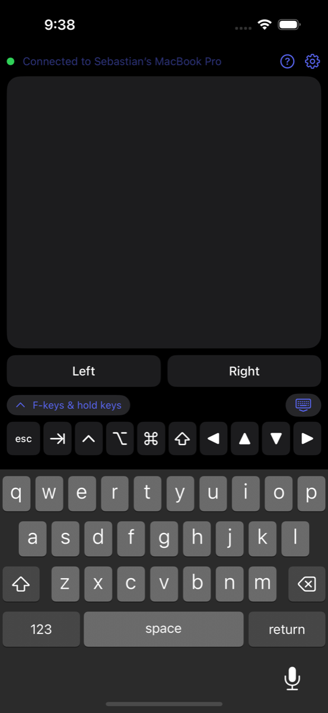
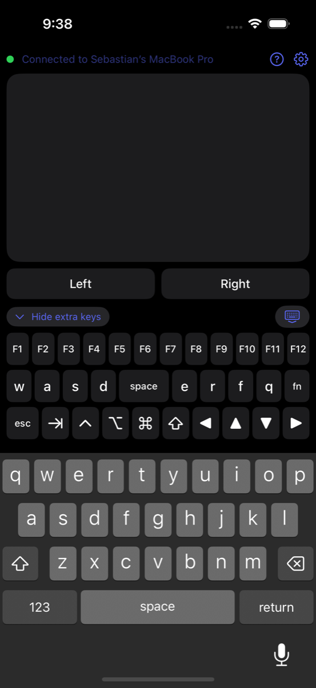

Couchpad
Your iPhone as a trackpad and keyboard for your Mac or Windows PC.
Beta. The iPhone app is a public TestFlight beta ahead of its free App Store release; Mac companion 1.1 is out with encrypted sessions. The Windows companion builds from source.
Made for the couch: the computer is plugged into the TV, you're across the room, and you don't want a mouse and keyboard on your lap.
Open Couchpad and your phone is both. The top of the screen is a trackpad; below it, the regular iPhone keyboard plus the keys a phone doesn't have. Nothing to sign up for and nothing leaves your Wi‑Fi.

What's on the phone
Trackpad
One finger moves the pointer, tap to click, two-finger tap to right-click, two fingers to scroll, tap-then-hold to drag. Three-finger swipes open Mission Control, App Exposé and switch Spaces (Task View and virtual desktops on Windows). Left and Right buttons you can hold while you move.
Keyboard
The iPhone keyboard, typing straight to the computer with autocorrect off. Above it, a strip with esc, tab, arrows and ⌘ ⌥ ⌃ ⇧ (Ctrl / Alt / Win on a PC). Modifiers toggle and stay held, so ⌘C and ⌥Tab just work.
Game keys
Expand the strip for F1–F12 and a WASD / space / fn row that stays pressed while your finger is on it. Pointer motion is sent as raw mouse movement, which is what games read for camera look.
Pairing
The phone finds the computer by itself. Pair once by scanning the QR code from the computer's menu-bar or tray icon (or type its 6-digit code); the phone keeps a token after that. Codes are live for one minute, allow a single guess per connection, and rotate after three misses. Only paired phones can send input, and the computer can forget them at any time.
Sessions
Leave the app and come back: it reconnects in a second or two, no code needed. If you were holding a key when you left, the computer releases it.
Settings
Pointer speed, scroll speed, natural scrolling, tap-to-drag, three-finger swipes, and a manual address for networks that block Bonjour.

Get Couchpad
| iPhone | Join the TestFlight beta — install Apple's TestFlight app, open the link on your phone, tap Install. Free App Store release coming. iOS 17 or later. |
|---|---|
| Mac | Download Couchpad 1.1 for Mac — free, signed and notarized. Open the DMG, drag to Applications, open; it lives in the menu bar. macOS 13 or later. Needs Accessibility permission once. |
| Windows | Free companion app, system tray. Build from source with the .NET 8 SDK: dotnet publish Windows -c Release -r win-x64 --self-contained. Windows 10/11. Allow it through the firewall on private networks. Still looking for its first real-world test report. |
Set up in three steps
- Install the desktop app on the computer that's plugged into the TV.
- Allow it once. macOS asks for Accessibility access, which is what lets it move the pointer and type. Windows asks to allow it through the firewall.
- Pair. Open Couchpad on your iPhone on the same Wi‑Fi. It finds the computer; choose "Pair an iPhone…" from the menu-bar or tray icon and scan the QR code the first time.
Security, in plain terms
A phone that can type on your computer can do anything on it, so this part matters. Here is what Couchpad does about it and why.
Only paired phones get in
Your computer ignores everything from a phone it hasn't paired with. Pairing happens once, with a code you can see on the screen, and you can revoke any phone later with "Forget Paired iPhones."
The code can't be guessed
The 6-digit code only exists while the pairing window is open, for at most a minute, and works once. Each connection gets a single guess; three misses change the code and pause pairing. Someone on your Wi‑Fi trying codes at full speed would manage about twenty per minute against a million.
Everything is encrypted
Every connection starts with a fresh key exchange, like a web browser setting up HTTPS, and everything after it is encrypted. Someone watching the network sees two public keys and a nonce, then noise. Your typing, including passwords, is never readable in transit.
Secrets never travel
The phone never sends its pairing token or the code. It proves it knows them with a cryptographic signature tied to this connection, and the computer proves the same back. A recording can't be replayed, and a fake computer advertising your Mac's name learns nothing and can't pass messages through.
Nothing leaves your network
There is no account, no server and no cloud. The phone finds the computer on your local Wi‑Fi and talks to it directly. If you're not on the same network, nothing can connect.
What it can't protect against
A phone or computer that is itself compromised, or someone who can see your screen while you're pairing and act within that minute. Forgetting a phone on the computer, or the computer on the phone, cuts it off immediately. The full design is in the README; the code is open for anyone to check.
Privacy
Couchpad collects no data. It asks for Local Network access to find your computer, and for the camera only when you scan a pairing code. Read the privacy policy.
Open source
All three apps are MIT-licensed in one repository: Swift on iPhone and Mac, C# on Windows, talking a small text protocol over one TCP socket. Issues, ideas and pull requests welcome.